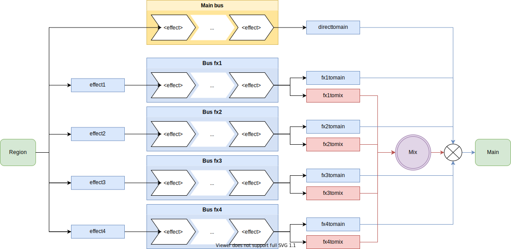

type
Effect type or vendor-specific effect name. Varies across SFZ players.
ARIA Extensions
In the PC version of ARIA, the MDA effects are bundled. That means that under the ‹effect› header, any of these effect types can be set.
com.mda.Limiter
com.mda.Overdrive
com.mda.Leslie
com.mda.RingMod
com.mda.Delay
com.mda.Bandisto
com.mda.Ambience
com.mda.DubDelay
com.mda.Detune
com.mda.Dither
com.mda.Combo
com.mda.Degrade
com.mda.SubSynth
com.mda.RezFilter
Also see param_offset for how to configure the parameters for these effects in ARIA. The order of the parameters is the same as at the plugin version of the MDA effects. These effects are not part of the SFZ engine, so it is not possible to, for example, have one MIDI CC parameter control two parameters in the same effect, or use custom curves. Example usage below:
<control>
set_cc300=64
set_cc301=127
<effect>
param_offset=300
type=com.mda.Overdrive
Cakewalk implementation
In Cakewalk, each of the effect types has its own set of opcodes controlling its parameters. Here is a list of what is currently known.
The effect routing logic in Rapture is as follows:

apan
Automatic panning with LFO:
comp
Compressor:
delay
Multi-purpose delay line:
- delay_cutoff
- delay_damphi
- delay_damplo
- delay_dry
- delay_feedback
- delay_filter
- delay_input
- delay_levelc
- delay_levell
- delay_levelr
- delay_lfofreq
- delay_moddepth
- delay_mode
- delay_panc
- delay_panl
- delay_panr
- delay_resonance
- delay_spread
- delay_syncc_onccN
- delay_syncl_onccN
- delay_syncr_onccN
- delay_time_tap
- delay_timec
- delay_timel
- delay_timer
- delay_wet
disto
Asymmetric distorsion with tone control:
eq
Equalizer (Same opcode meanings as ordinary EQ):
filter
(Same opcode meanings as ordinary filter):
fverb
Algorithmic reverberation:
gate
Signal gate:
limiter
No opcodes for this type.
lofi
Bit depth reducer and decimator combined:
mverb
Present in some Cakewalk products only, undocumented.
phaser
Dual-notch phaser with LFO:
- phaser_depth
- phaser_feedback
- phaser_freq
- phaser_phase_onccN
- phaser_stages
- phaser_waveform
- phaser_wet
static
Static noise generator:
- static_cyclic_level
- static_cyclic_time
- static_filter
- static_level
- static_random_level
- static_random_maxtime
- static_random_mintime
- static_stereo
- static_tone
strings
Sympathetic resonance with waveguide synthesis:
tdfir
Impulse response convolver:
Note that the Cakewalk book has some typos in opcode names, such as EffectN
(capital letter) or ‹effects›.
On this site, non-working effect types mentioned in the book were replaced with tested
ones. For example, autopan does not appear to work in any Cakewalk product, while
apan works. Same for lofi instead bitred and decim, and disto instead of
distortion.
| Name | Version | Type | Default | Options | Unit |
|---|---|---|---|---|---|
| type | SFZ v2 | string | N/A | apan, comp, delay, disto, eq, filter, fverb, gate, limiter, lofi, mverb, phaser, static, strings, tdfir | |
| ARIA | com.mda.Limiter, com.mda.Overdrive, com.mda.Leslie, com.mda.RingMod, com.mda.Delay, com.mda.Bandisto, com.mda.Ambience, com.mda.DubDelay, com.mda.Detune, com.mda.Dither, com.mda.Combo, com.mda.Degrade, com.mda.SubSynth, com.mda.RezFilter |
Category: Effects